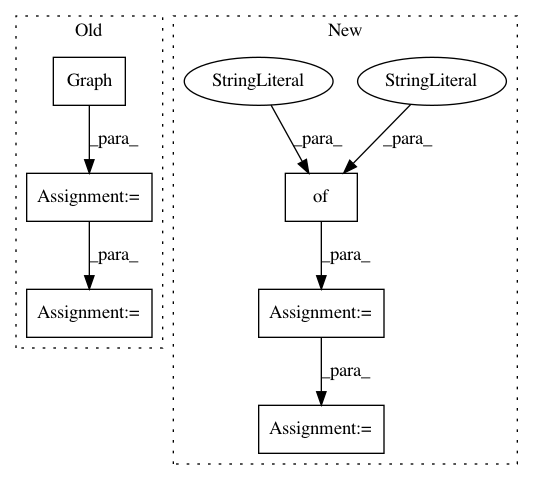

3db0f69797d05b8090e4f1c72e9428991e3f2ff0,tests/mapper/test_node_mappers.py,,example_hin_3,#Any#,79
Before Change
nodes_type_2 = [4, 5, 6]
// Create isolated graphs
G = nx.Graph()
G.add_nodes_from(nodes_type_1, label="t1")
G.add_nodes_from(nodes_type_2, label="t2")
G.add_edges_from([(0, 4), (1, 5)], label="e1")
G.add_edges_from([(0, 2)], label="e2")
// Node 2 has no edges of type 1
// Node 1 has no edges of type 2
// Node 6 has no edges
// Add example features
if feature_size_by_type is not None:
for v, vdata in G.nodes(data=True):
nt = vdata["label"]
vdata["feature"] = (int(v) + 10) * np.ones(
feature_size_by_type[nt], dtype="int"
)
G = StellarGraph(G, node_features="feature")
else:
G = StellarGraph(G)
After Change
def example_hin_3(feature_size_by_type=None):
if feature_size_by_type is None:
feature_size_by_type = {"t1": None, "t2": None}
nodes_type_1 = np.array([0, 1, 2])
nodes_type_2 = np.array([4, 5, 6])
nodes = {
"t1": pd.DataFrame(
repeated_features(10 + nodes_type_1, feature_size_by_type["t1"]),
index=nodes_type_1,
),
"t2": pd.DataFrame(
repeated_features(10 + nodes_type_2, feature_size_by_type["t2"]),
index=nodes_type_2,
),
}
edges = {
"e1": pd.DataFrame([(0, 4), (1, 5)], columns=["source", "target"]),
"e2": pd.DataFrame([(0, 2)], columns=["source", "target"], index=[2]),
}
In pattern: SUPERPATTERN
Frequency: 4
Non-data size: 6
Instances
Project Name: stellargraph/stellargraph
Commit Name: 3db0f69797d05b8090e4f1c72e9428991e3f2ff0
Time: 2020-03-04
Author: Huon.Wilson@data61.csiro.au
File Name: tests/mapper/test_node_mappers.py
Class Name:
Method Name: example_hin_3
Project Name: stellargraph/stellargraph
Commit Name: 3db0f69797d05b8090e4f1c72e9428991e3f2ff0
Time: 2020-03-04
Author: Huon.Wilson@data61.csiro.au
File Name: tests/mapper/test_node_mappers.py
Class Name:
Method Name: example_hin_2
Project Name: tensorflow/transform
Commit Name: 27187bfff545ef066da5627d7dff8a6caad19e9e
Time: 2017-02-16
Author: no-reply@google.com
File Name: tensorflow_transform/impl_helper_test.py
Class Name: ImplHelperTest
Method Name: testImportAndExportDense
Project Name: tensorflow/transform
Commit Name: 27187bfff545ef066da5627d7dff8a6caad19e9e
Time: 2017-02-16
Author: no-reply@google.com
File Name: tensorflow_transform/impl_helper_test.py
Class Name: ImplHelperTest
Method Name: testImportAndExportSparse